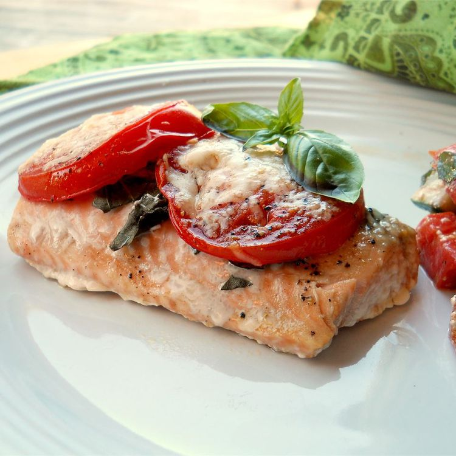

Tomato Basil Salmon

Description
This quick salmon dish is perfect for a weeknight dinner. Serve with a side of sauteed spinach and a glass of pinot noir.
Ingredients
- 2 (6 ounce) boneless salmon fillets
- 1 tablespoon dried basil
- 1 tomato, thinly sliced
- 1 tablespoon olive oil
- 2 tablespoons grated Parmesan cheese
Steps
- Preheat oven to 375 degrees F (190 degrees C). Line a baking sheet with a piece of aluminum foil, and spray with nonstick cooking spray. Place the salmon fillets onto the foil, sprinkle with basil, top with tomato slices, drizzle with olive oil, and sprinkle with the Parmesan cheese.
- Bake in the preheated oven until the salmon is opaque in the center, and the Parmesan cheese is lightly browned on top, about 20 minutes.